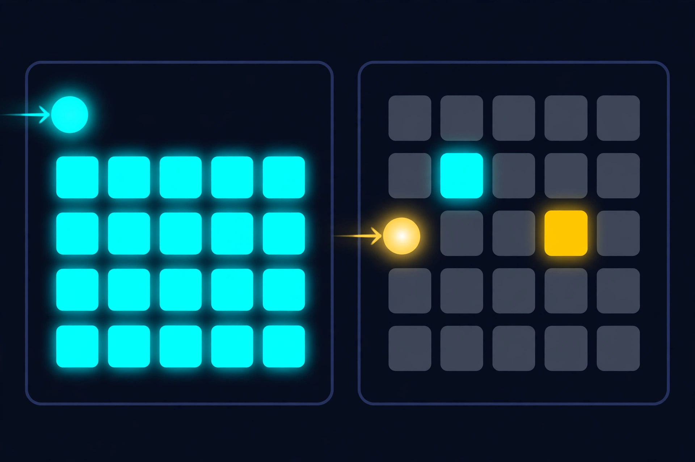

Mixture of Experts, Explained: How AI Models Get Bigger Without Getting Slower
One model, hundreds of specialists, and a tiny traffic cop deciding who works on each word — the trick that lets today’s biggest AI models stay affordable to run.
1 What it is
A mixture of experts, or MoE, is a way to build a very large AI model that only does a small amount of work on each word. Instead of one giant network that processes every token, the model is split into many smaller specialist networks — the experts — plus a tiny traffic cop, called the router, that decides which experts handle each token.
The idea is older than modern AI: Jacobs, Jordan, Nowlan, and Hinton proposed it in 1991 as a way to split a problem across specialized sub-networks. The version inside today’s models comes from a 2017 paper by Shazeer and colleagues at Google, which showed that a sparsely-gated mixture of experts could reach 137 billion parameters while activating only a small fraction of them per step — and match dense models at much lower training cost.
The key distinction is between two numbers that sound the same but are not. Total parameters are how much the model can know — its capacity. Active parameters are how much compute it spends on each token — its cost. MoE decouples the two: the model can store far more knowledge than it uses on any single word. Only the feed-forward layers become experts; attention, embeddings, and normalization are shared and always active, and feed-forward layers hold roughly two-thirds of a transformer’s parameters.
2 How it works: the loop
Every mixture-of-experts layer runs the same four-step loop, once per token, once per layer:
Which experts a token reaches is learned during training and decided fresh every time — nothing is assigned in advance. Adjacent tokens in the same sentence can activate completely different experts, and the router itself adds almost no compute: a single small matrix multiply. DeepSeek-V3 adds a twist — 256 routed experts, eight selected per token, plus one shared expert that is always active, handling the patterns common to every input.
3 MoE vs dense
A dense model is the straightforward design: every parameter works on every token. It is simple, predictable, and easy to serve — and its cost grows with its size. A mixture-of-experts model trades that simplicity for scale: most of its parameters sit idle for any given token, so the model can be far larger for roughly the same per-token cost.
The comparison that made the idea famous is Mixtral 8x7B: 46.7 billion total parameters, but only about 12.9 billion active per token — and it matched or exceeded Llama 2 70B on most benchmarks, at the inference cost of a much smaller dense model.
4 Why everyone’s building it now
Today’s news is the clearest peg yet. Alibaba launched Qwen4-Max on Monday: a 2.4-trillion-parameter mixture-of-experts model with about 71 billion parameters activated per token, a one-million-token context window, and prices about 25 percent lower than its predecessor — $1.50 per million input tokens and $4.50 per million output tokens. Alibaba says it beats Claude Opus 5.5 on coding benchmarks.

The pattern is now the default at the frontier. Google’s GLaM, a 1.2-trillion-parameter MoE with 64 experts per layer, matched GPT-3’s quality using roughly one-third the training compute. DeepSeek-V3 runs 256 experts. Kimi K3, the latest model in the race, is built the same way. When the next step up in dense model size becomes too expensive to train and serve, adding experts is the manageable way to keep growing.
5 The honest part
First, MoE does not make a model smarter per token — it makes it more knowledgeable. A 13-billion-active MoE knows more than a 13-billion dense model, but the computation applied to each token is still roughly 13 billion parameters’ worth. Tasks that demand deep sequential reasoning over one input, rather than broad knowledge recall, see less benefit from the idle experts.
Second, the memory bill does not shrink. The full set of expert weights must live in memory even though each forward pass touches only a fraction of them, so MoE models are memory-bound when serving — and quantization and weight offloading matter more for them than for dense models of similar speed.
Third, training is fragile. Left alone, the router collapses: a few experts attract most of the traffic, get better, and attract even more, while the rest starve and never learn. Labs fight this with an auxiliary load-balancing loss, with caps on how many tokens each expert may take, and — in DeepSeek-V3 — with a dynamic bias term that nudges underused experts’ scores upward. There is also a “routing tax”: for the same total parameter count, a dense model edges out a sparse one, because some tokens land on a suboptimal expert. The compute savings more than compensate — but the tax is real, and for small-scale work or a single-GPU deployment, a dense model is often still the more practical choice.
Key terms
- Expert One of the specialist sub-networks inside a mixture-of-experts model — a feed-forward network that handles the tokens the router sends it.
- Router The small learned network, also called the gating network, that scores every expert for each token and picks which ones run.
- Sparse activation Running only a small fraction of a model’s parameters for each input, while the rest stay idle.
- Top-k routing The router’s rule for picking experts: take the k highest-scoring experts per token, commonly one or two.
- Active parameters The parameters that actually run for a given token — what sets the compute cost of answering, as opposed to the total stored in the model.
- Load balancing The training problem of keeping the router from sending every token to the same few experts, fixed with extra loss terms, token caps, or dynamic routing bias.
This lesson comes from today’s Daily Tech Briefing (Episode 35, November 16, 2026): Huang’s comeback talk, Anthropic’s $1.4T debut, and the AI supply-chain pact. Read the full briefing: Jensen Huang Wants His Job Back — Daily Tech Briefing.
Brink Data Science, “Mixture of Experts: How Sparse Routing Scales Language Models” (September 7, 2026); Shazeer et al., “Outrageously Large Neural Networks: The Sparsely-Gated Mixture-of-Experts Layer” (2017); Jiang et al., “Mixtral of Experts” (2024); DeepSeek-AI, “DeepSeek-V3 Technical Report” (2024); The Model Atlas, “Qwen4-Max is out: price, benchmarks and how to try it” (November 16, 2026).